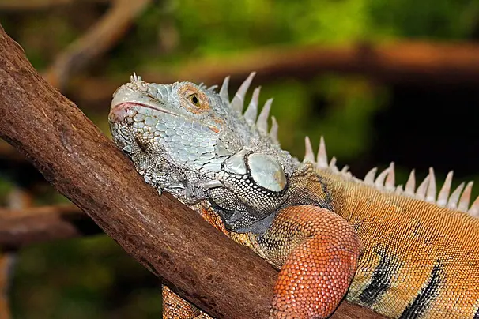

İguana, Orta ve Güney Amerika’nın tropikal bölgelerinde yaşayan, gösterişli görünümü ve uzun kuyruğuyla tanınan büyük bir kertenkele türüdür; genellikle yeşil renkte olup çevresine uyum sağlamak için renk tonlarını değiştirebilir, güçlü pençeleri ve keskin dişleriyle bitkiler, yapraklar ve meyvelerle beslenen otçul bir yapıya sahiptir; ortalama 1,5–2 metre uzunluğa ve 5–8 kg ağırlığa ulaşabilir, 15–20 yıl kadar yaşayabilir; gündüzleri aktif olan bu tür, güneşlenerek vücut ısısını düzenler ve iyi bir yüzücü olduğu için su kenarlarında sıkça görülür; insanlar için genellikle zararsızdır ancak savunma amaçlı kuyruğunu kamçı gibi kullanabilir; kültürel açıdan ise tropikal doğanın simgesi olarak egzotik evcil hayvan olarak da beslenmekte, doğada ise çevreye uyum ve dayanıklılığın sembolü olarak görülmektedir.